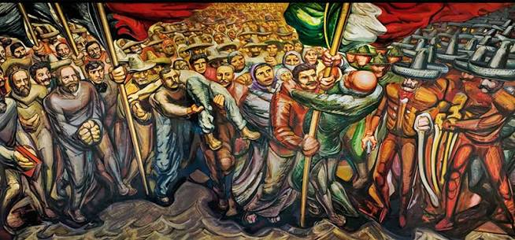
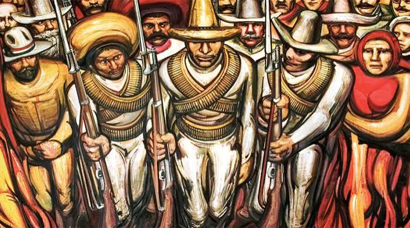

REVOLUCIÓN MEXICANA
1910 - 1920
"Sufragio efectivo, no reelección"

¿QUÉ FUE LA REVOLUCIÓN MEXICANA?
La Revolución Mexicana fue un movimiento armado que comenzó el 20 de noviembre de 1910. Surgió como respuesta al gobierno de Porfirio Díaz, quien permaneció en el poder durante más de treinta años. El movimiento buscaba terminar con la dictadura, conseguir elecciones libres y mejorar las condiciones de vida de la población.
CAUSAS PRINCIPALES
- La permanencia de Porfirio Díaz en el poder.
- La falta de democracia y libertad política.
- La desigualdad económica y social.
- La concentración de tierras en pocas manos.
- Las malas condiciones laborales de los trabajadores.
PERSONAJES IMPORTANTES
Francisco I. Madero
Impulsó el movimiento antirreeleccionista y llamó al levantamiento armado de 1910.
Emiliano Zapata
Defendió los derechos de los campesinos y la restitución de sus tierras.
Francisco Villa
Fue uno de los principales líderes revolucionarios del norte de México.
FECHAS IMPORTANTES
1910: Inicio de la Revolución Mexicana.
1911: Porfirio Díaz renuncia a la presidencia.
1913: Decena Trágica y asesinato de Madero.
1914: Caída del gobierno de Victoriano Huerta.
1917: Se promulga la Constitución Política.
CONSECUENCIAS

- El fin del Porfiriato.
- La promulgación de la Constitución de 1917.
- El reconocimiento de derechos laborales.
- El impulso a las demandas agrarias.
- La transformación política y social de México.
LEGADO HISTÓRICO

La Revolución Mexicana marcó un antes y un después en la historia de nuestro país. Sus ideales de justicia social, democracia y derechos siguen siendo importantes para comprender el México actual.